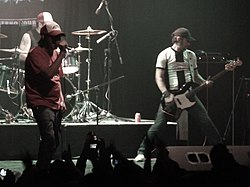

también conocido como 2', es un grupo musical de punk rock, formada en 1987, en Valentín Alsina, Provincia de Buenos Aires, Argentina.
| Año | Disco |
|---|---|
| 1994 | Valentin Alsina |
| 1995 | Volvio la alegria vieja |
| 1997 | Postal 97 | Este fue su ultimo disco Expunkto (EP) (2022) |